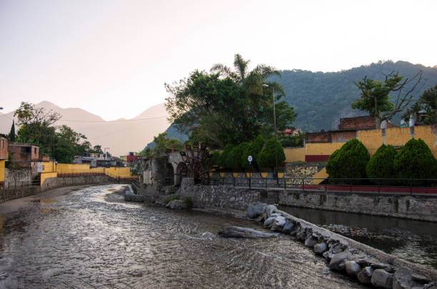
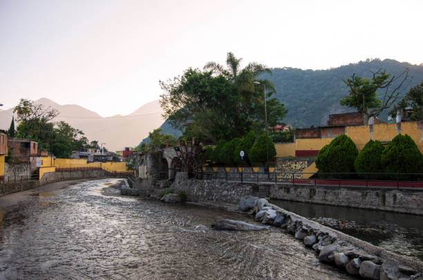

Explora Orizaba
Descubre los mejores lugares turísticos, actividades y experiencias que te esperan en esta joya veracruzana.
 


Conéctate con la Naturaleza
Disfruta de paisajes impresionantes, senderismo y actividades al aire libre.
Descubrir más